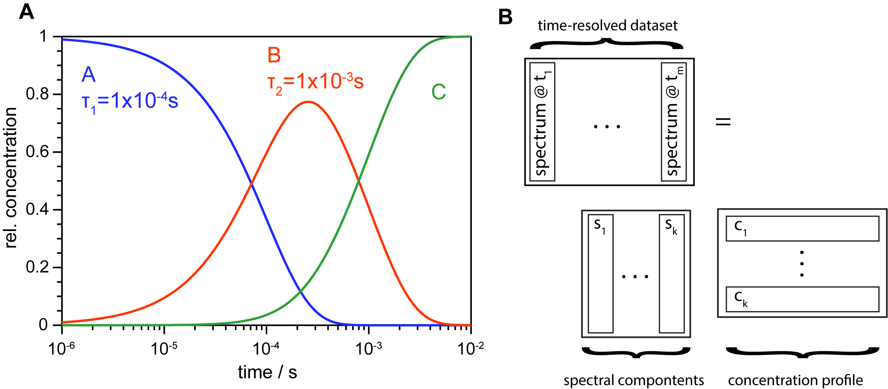

Global analysis¶
In contrast to SVD, global target analysis requires a model as fitting instruction. With this, models can be tested and parameters determined. Sticking to time-resolved spectral data, a model contains how spectral components evolve over time. This results in a system of ordinary differential equations which can be (analytically) solved resulting in a concentration profile as shown for a sequential model in the image below.
{kind=link}
In this toolbox, the differential equations are generated via a K-matrix \(\mathbf{K}\) and two vectors, one for the rate constants \(\vec{r}\) and another for the concentrations of the species \(\vec{c}\)
For a model of three parallel decaying reactions it reads as follows
with \(\circ\) denoting the elementwise Hadamard product. Interpreting each element of the result of the matrix multiplication as differential equations leads to
It is obvious that the K-matrix defines the model. By choosing a slightly different matrix a sequential model can be implemented:
By global analysis, time constants and spectral comonents associated with the transitions are obtained. Using parallel reactions, these are called Decay associated spectra (DAS) while they are termed Evolution associated spectra (EAS) if a sequential model is used. If the reaction is known and the right model was chosen one will obtain the so-called Species associated spectra (SAS).
The preferred method for the fitting procedure is to fit the concentration profile to a specified number of abstract time traces which reduces drastically dimensionality and proved to be analytically very stable. The routine can be called via trtoolbox.globalanalysis.doglobalanalysis(). Here, important parameters are tcs as a list with initial time constants and svds defining how many abstract time traces shall be fitted (can also be a list for defining SVs explicitly). The style flag defines the model (dec: parallel reactions, seq: sequential model, back: sequential model with back reactions). It is also possible to provide an own K-matrix for creating custom models (like branching; example in example_ga.py).
Tow methods are implemented for fitting abstrac time traces. One uses the odeint function from SciPy (method='svd_odeint') where time traces are created out of the concentration profile. Under certain circumstances this can result in a more meaningful fit but the odeint function delivers slightly different results depending the machine where its run. Therefore it has to be done with care. The other method uses a simple exponential fit provided by the trtoolbox.expfit package (method='svd_expfit') where the solution does not depend on the machine. This is the default fitting routine.
The returned objext is trtoolbox.globalanalysis.Results.